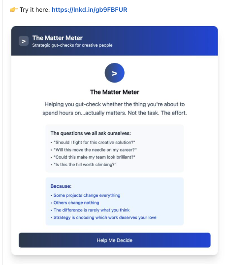

Ready to explore narrative intelligence?
This is a guided audio walkthrough of the Narrative Agent.
🎧 Headphones recommended for the best experience
Not the writing. The judgment that comes before it.
What matters? What's missing? What's emerging?
So I broke the instinct apart.
What's worth paying attention to?

What's not being said?

What's starting to take shape?

A story doesn't live in one place. It's in the strategy, the product, what customers are saying, what the numbers prove, and what the company is saying out loud.
And those things are connected.
So what if the story knew it was connected?
Narrative Agent breaks narrative into units and maps the relationships between them. Change something in one place and you can see what it affects somewhere else.
Now you can ask: Does this still hold up? What broke? What's missing? Where did we drift?
I call it narrative algebra.

They have websites, decks, research, executive talking points, product messaging, employee communications, customer stories, strategy documents, transcripts, launches, and thousands of other fragments.
The problem is seeing the story across all of it.
Where are we aligned?
Where are we contradicting ourselves?
What are we saying without proving?
What do we know that we're not saying?
What changed?
And what should the story become next?
That's the problem Narrative Agent is designed to explore.
It became an experiment in something larger:
Can human judgment become a system without removing the human from the judgment?
I don't think the interesting future of AI and communications is machines generating more content.
We already have plenty of content.
The interesting part is whether AI can help us understand what all that information means, recognize what doesn't fit, and make better decisions about the story we tell next.
That's what I'm building.